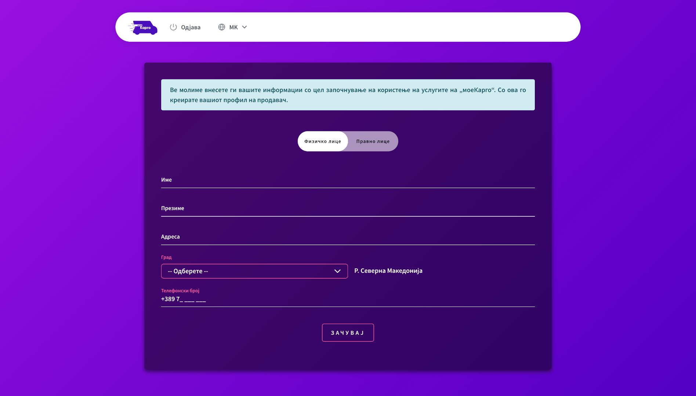
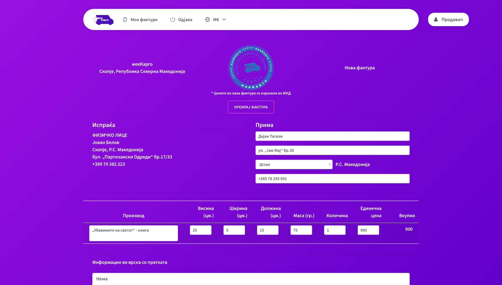
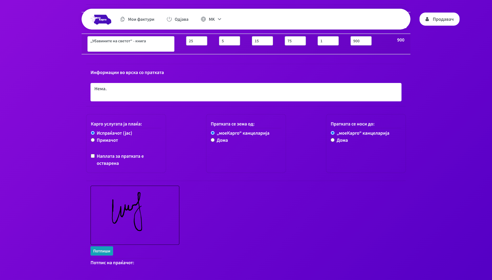
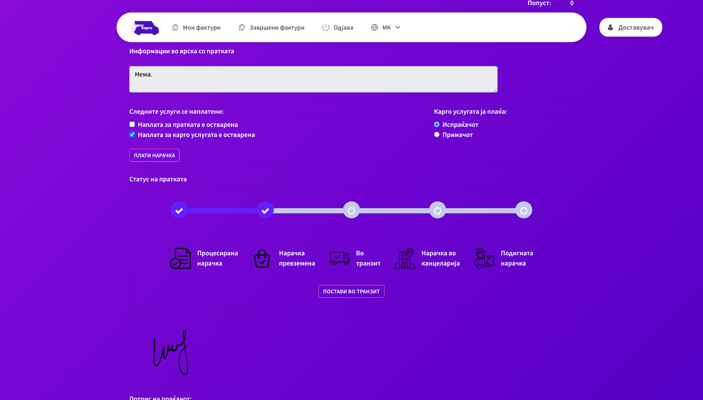
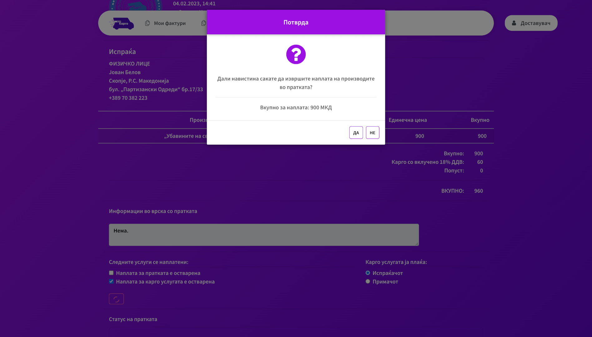
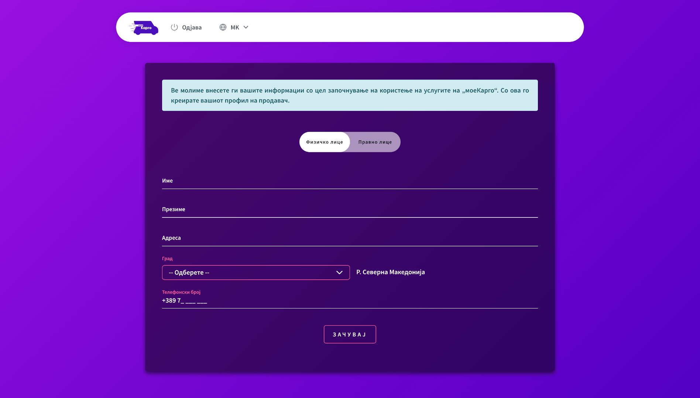
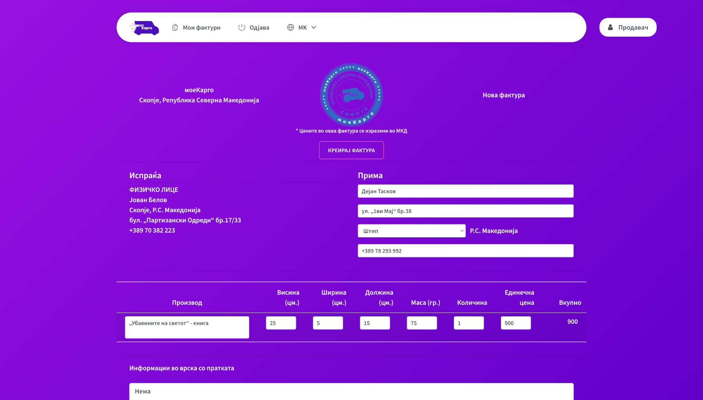
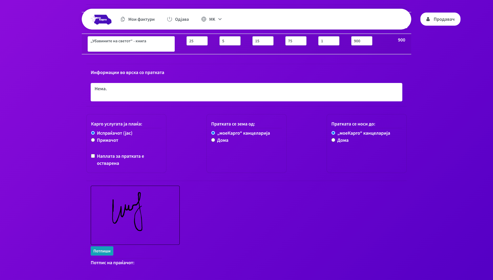
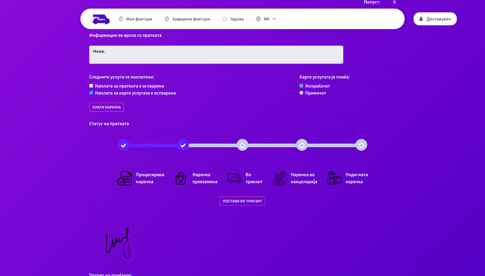
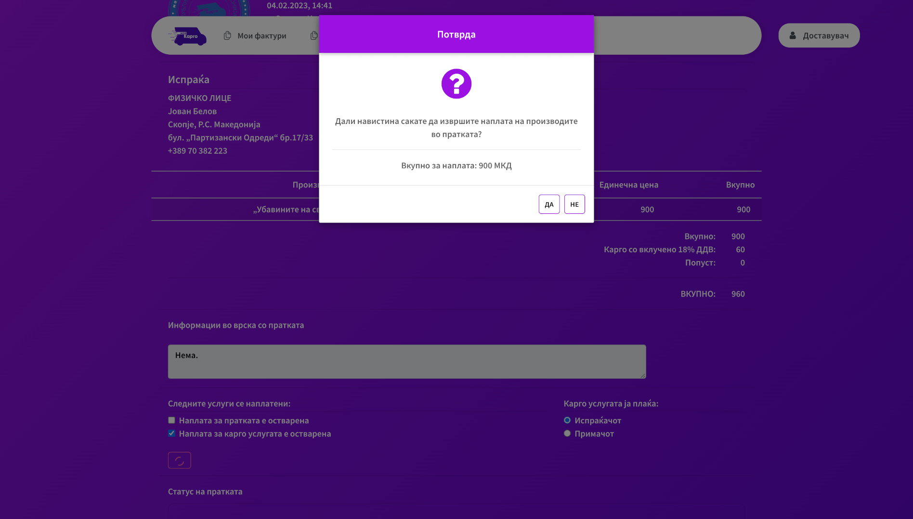

myCargo
 









-
Category
Web application
-
Language
English, Macedonian
-
Project links
-
Description
The 'myCargo' platform is a system for managing cargo shipments and facilitating the process of the transportation from the seller to the buyer. The system is mainly intended for use by sellers who need to transport products that have been requested by their buyer, as well as for employees who deliver shipments and manage them internally. As a logged-in user who previously successfully created his profile as a seller, he can register new invoices with shipments in the system, to have insight into the history of the shipments he delivered, as well as their statuses. On the other hand, internally there are employees who are managers and delivery guys. Managers have the responsibility to assign an invoice to a responsible delivery guy, to manage the data for the delivery guys, to create a seller as a legal person, and for that need, to manage the data of the companies cooperating with 'myCargo'. The delivery guys, on the other hand, have the responsibility to change the status of the assigned invoices upon successful or unsuccessful delivery, to charge for the products and/or the cargo service (the fee), as well as to have an insight into the history of the previously assigned (un)successfully delivered shipments. The system also offers different ways of receiving and delivering goods, as well as enabled electronic payment of the cargo service fee.
-
Technologies used
* Spring Boot (Java)
* Vue.js Progressive JavaScript Framework
* PostgreSQL Database